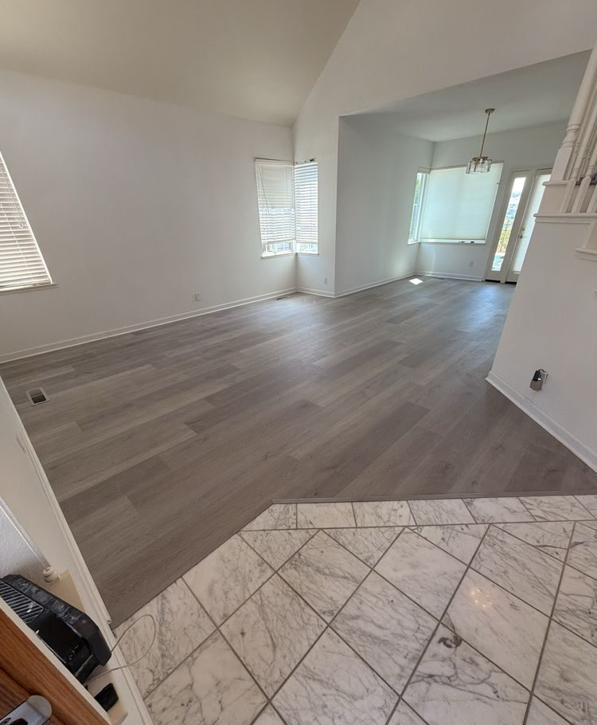
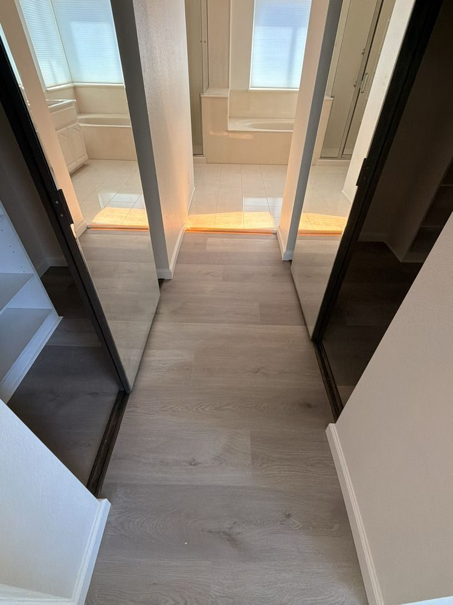
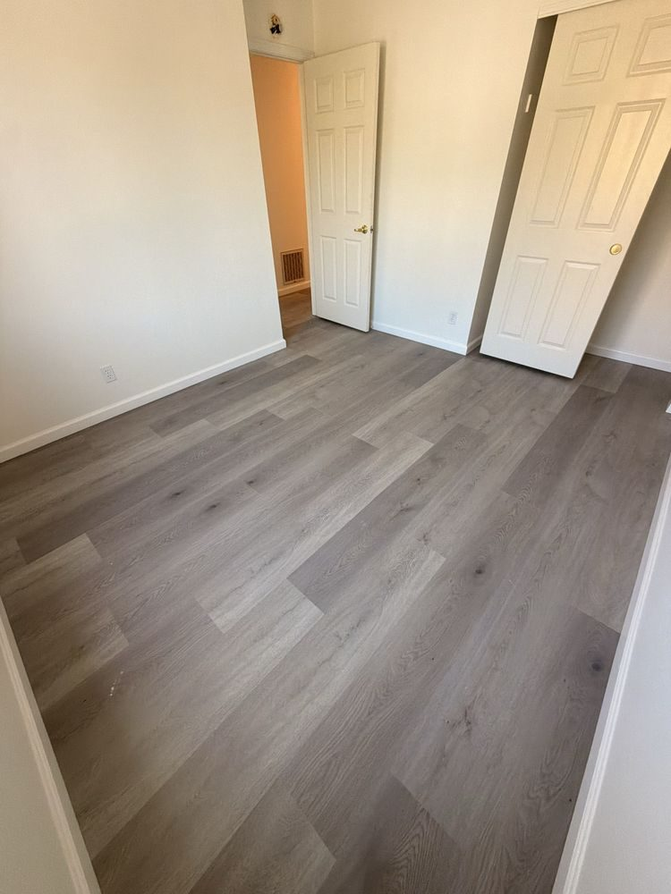
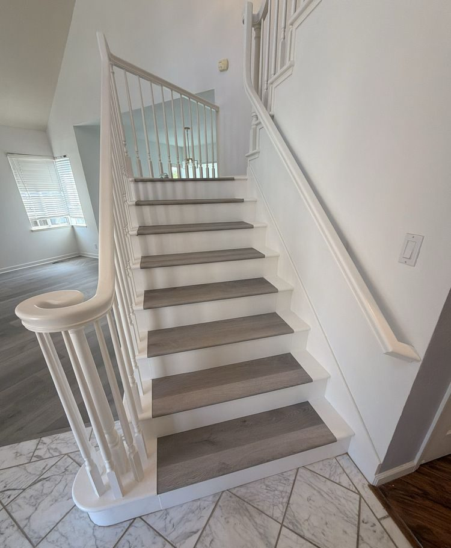

Interior flooring
Finished flooring for living areas, bedrooms, halls, and the spaces between.
Garcia Innovations in Tracy, California
Finish the surfaces underfoot and around the room with flooring, tile, and detail work built to make the space feel complete.

Floors, tile, stairs, and transitions do a lot of the quiet work in a remodel. Garcia Innovations helps carry those surfaces through with a clean, consistent finish.
Finished flooring for living areas, bedrooms, halls, and the spaces between.
Floor and wall tile that fits naturally with the rest of the room.
Staircase work that makes a high-traffic part of the home feel intentional.
A few examples from the Garcia Innovations work library.


